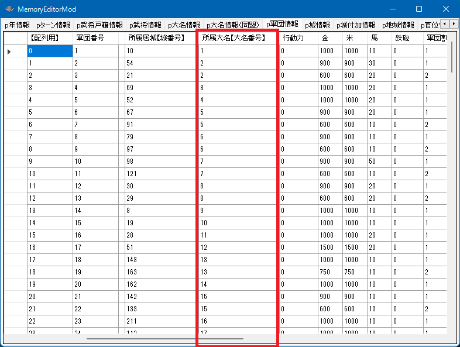

軍団
軍団とは、軍団長率いる軍団のことです。
大名自身が率いる第１軍団も、軍団という扱いになります。
軍団と一言で言っても３つの概念で構成されます。
-
軍団
軍団という抽象的なカテゴリの概念。
-
「p軍団情報」という配列
軍団の一覧リストに相当する「軍団の配列」の概念。
-
p軍団情報[ix] (0 <= ix < 軍団の総数)
軍団の配列のうち、どれか１つの軍団
軍団番号から軍団長がいる居城を求める
void カスタム::On_プレイヤ担当ターン《メイン画面》() {
int iGundanID = pターン情報.現在のターン【軍団番号】 - 1;
if (0 <= iGundanID && iGundanID < 最大数::軍団情報::配列数) {
if (Is_プレイヤ担当軍団(iGundanID)) {
int iCastleID = p軍団情報[iGundanID].所属居城【城番号】 - 1;
デバッグ出力 << Get_城名(iCastleID) << Get_城称(iCastleID) << endl;
}
}
}
軍団番号から軍団が所属している大名を求める

void カスタム::On_プレイヤ担当ターン《メイン画面》() {
for (int iGundanID = 0; iGundanID < 最大数::軍団情報::配列数; iGundanID++) {
// その軍団が所属している大名番号【配列用】を求める
int iDaimyoID = p軍団情報[iGundanID].所属大名【大名番号】 - 1;
int i軍団長BushouID = p軍団情報[iGundanID].軍団長【武将番号】 - 1;
if (0 <= i軍団長BushouID && i軍団長BushouID < 最大数::武将情報::配列数) {
デバッグ出力 << "軍団長の" << Get_名字(i軍団長BushouID) << Get_名前(i軍団長BushouID) << "は..." << endl;
// 第一軍団長であり、大名でもある
if (p武将戸籍情報[i軍団長BushouID].状態 == 状態::大名) {
デバッグ出力 << "大名本人でもあります" << endl;
}
// 第二軍団以降の軍団長であり、大名ではない場合
else {
if (0 <= iDaimyoID && iDaimyoID < 最大数::大名情報::配列数) {
int i大名BushouID = p大名情報[iDaimyoID].大名【武将番号】 - 1;
if (0 <= iDaimyoID && iDaimyoID < 最大数::武将情報::配列数) {
デバッグ出力 << Get_名字(i大名BushouID) << Get_名前(i大名BushouID) << "の大名家に帰属する軍団長です。" << endl;
}
}
}
}
}
}
プレイヤ担当の軍団か？
プレイヤーが担当する大名家に帰属する全ての軍団（第１軍団～第８軍団）であれば、true となります。
void カスタム::On_プレイヤ担当ターン《メイン画面》() {
for (int iGundanID = 0; iGundanID < 最大数::軍団情報::配列数; iGundanID++) {
if (Is_プレイヤ担当軍団(iGundanID)) {
int iBushouID = p軍団情報[iGundanID].軍団長【武将番号】 - 1;
if (0 <= iBushouID && iBushouID < 最大数::武将情報::配列数) {
デバッグ出力 << Get_名字(iBushouID) << Get_名前(iBushouID) << "はプレイヤの担当している大名麾下の軍団長です(大名自身含む)" << endl;
}
}
}
}
軍団番号とループ
軍団番号【配列用】をループしていく方法としては主に以下の２通りがあります。
単純に for でループしていく方法
void カスタム::On_プレイヤ担当ターン《メイン画面》() {
// for とカウンタで回すタイプ
for (int iGundanID = 0; iGundanID < 最大数::軍団情報::配列数; iGundanID++) {
int iBushouID = p軍団情報[iGundanID].軍団長【武将番号】 - 1;
if (0 <= iBushouID && iBushouID < 最大数::武将情報::配列数) {
デバッグ出力 << Get_名字(iBushouID) << Get_名前(iBushouID) << "軍団" << endl;
}
}
}
リストを得て、foreachをする方法
void カスタム::On_プレイヤ担当ターン《メイン画面》() {
// 有効な軍団番号【配列用】のリストを取得するタイプ
番号リスト型 vGundanList = Get_軍団番号リスト【配列用】();
for (int iGundanID : vGundanList) {
int iBushouID = p軍団情報[iGundanID].軍団長【武将番号】 - 1;
if (0 <= iBushouID && iBushouID < 最大数::武将情報::配列数) {
デバッグ出力 << Get_名字(iBushouID) << Get_名前(iBushouID) << "軍団" << endl;
}
}
}
軍団の行動力
軍団の行動力は、軍団長個人に帰属するのではなく、軍団という組織のパラメータです。

p軍団情報[ix].行動力
void カスタム::On_プレイヤ担当ターン《メイン画面》() {
for (int iGundanID = 0; iGundanID < 最大数::軍団情報::配列数; iGundanID++) {
int iBushouID = p軍団情報[iGundanID].軍団長【武将番号】 - 1;
if (0 <= iBushouID && iBushouID < 最大数::武将情報::配列数) {
デバッグ出力 << Get_名字(iBushouID) << Get_名前(iBushouID) << "の行動力は" << (int)p軍団情報[iGundanID].行動力 << endl;
if (Is_プレイヤ担当軍団(iGundanID)) {
p軍団情報[iGundanID].行動力 = 200;
}
}
}
}
金・米・馬・鉄砲
馬や鉄砲については、武将の兵に貸し与えているものとは別の、いわば「予備の馬」「予備の鉄砲」の数値だと言えます。
p軍団情報[ix].金
p軍団情報[ix].米
p軍団情報[ix].馬
p軍団情報[ix].鉄砲
void カスタム::On_プレイヤ担当ターン《メイン画面》() {
for (int iGundanID = 0; iGundanID < 最大数::軍団情報::配列数; iGundanID++) {
int iBushouID = p軍団情報[iGundanID].軍団長【武将番号】 - 1;
if (0 <= iBushouID && iBushouID < 最大数::武将情報::配列数) {
デバッグ出力 << Get_名字(iBushouID) << Get_名前(iBushouID) << endl;
int 金 = p軍団情報[iGundanID].金;
int 米 = p軍団情報[iGundanID].米;
int 馬 = p軍団情報[iGundanID].馬;
int 鉄砲 = p軍団情報[iGundanID].鉄砲;
デバッグ出力 << "金, 米, 馬, 鉄砲" << 金 << "," << 米 << "," << 馬 << "," << 鉄砲 << endl;
if (金 < 5000) {
p軍団情報[iGundanID].金 = 5000;
}
if (米 < 5000) {
p軍団情報[iGundanID].米 = 5000;
}
if (馬 < 5000) {
p軍団情報[iGundanID].馬 = 5000;
}
if (鉄砲 < 1000) {
p軍団情報[iGundanID].鉄砲 = 1000;
}
}
}
}
１番～８番の軍団割当番号
言葉が軍団番号と近くて紛らわしいので気をつけてください。
こちらは、第一軍団～第八軍団といったように、１～８で割り当てられている軍団の数字での呼び名です。
p軍団情報[ix].軍団割当番号
番号リスト型 Get_軍団未割当番号リスト(int 大名番号【配列用】)
番号リスト型 Get_軍団割当番号リスト(int 大名番号【配列用】)
bool Set_軍団割当番号変更(int 軍団番号【配列用】, int 新割当番号)
void カスタム::On_プレイヤ担当ターン《メイン画面》() {
for (int iGundanID = 0; iGundanID < 最大数::軍団情報::配列数; iGundanID++) {
int iBushouID = p軍団情報[iGundanID].軍団長【武将番号】 - 1;
if (0 <= iBushouID && iBushouID < 最大数::武将情報::配列数) {
デバッグ出力 << Get_名字(iBushouID) << Get_名前(iBushouID) << "の軍団割当番号は" << (int)p軍団情報[iGundanID].軍団割当番号 << endl;
}
}
}
軍団割当番号を変更する際は、「空き番号」を探して、そこへと変更することになる
void カスタム::On_プレイヤ担当ターン《メイン画面》() {
for (int iGundanID = 0; iGundanID < 最大数::軍団情報::配列数; iGundanID++) {
int iBushouID = p軍団情報[iGundanID].軍団長【武将番号】 - 1;
if (0 <= iBushouID && iBushouID < 最大数::武将情報::配列数) {
デバッグ出力 << Get_名字(iBushouID) << Get_名前(iBushouID) << "の軍団割当番号は" << (int)p軍団情報[iGundanID].軍団割当番号 << endl;
// 軍団番号が変更可能な第２軍団以降に関して
if (p軍団情報[iGundanID].軍団割当番号 >= 2) {
// 軍団が所属している大名を求める
int iDaimyoID = p軍団情報[iGundanID].所属大名【大名番号】 - 1;
if (0 <= iDaimyoID && iDaimyoID < 最大数::大名情報::配列数) {
// 軍団割当番号ででまだ割り当てられていない番号のリストを得る
番号リスト型 未割り当てリスト = Get_軍団未割当番号リスト(iDaimyoID);
// 未割り当ての番号が１つ以上ある
bool success = false;
if (未割り当てリスト.size() >= 1) {
int last_index = 未割り当てリスト.size() - 1;
int 未割り当ての最後の番号 = 未割り当てリスト[last_index];
// 未割り当ての最初の番号に当てる
success = Set_軍団割当番号変更(iGundanID, 未割り当ての最後の番号);
}
if (success) {
番号リスト型 割り当て済みの番号リスト = Get_軍団割当番号リスト(iDaimyoID);
デバッグ出力 << "大名番号【配列用】" << iDaimyoID << "において、軍団割当番号は...";
for (int ix : 割り当て済みの番号リスト) {
デバッグ出力 << ix << ",";
}
デバッグ出力 << "と変化しました" << endl;
}
}
}
}
}
}
軍団の兵数
実は「軍団の兵数」といった概念は存在していません。
軍団に所属する個々の武将が持っている兵数を足したもの、それが軍団の兵数です。
よって軍団の兵数の値を設定する、といった概念はありません。
void カスタム::On_プレイヤ担当ターン《メイン画面》() {
for (int iGundanID = 0; iGundanID < 最大数::軍団情報::配列数; iGundanID++) {
int iBushouID = p軍団情報[iGundanID].軍団長【武将番号】 - 1;
if (0 <= iBushouID && iBushouID < 最大数::武将情報::配列数) {
デバッグ出力 << Get_名字(iBushouID) << Get_名前(iBushouID) << "の軍団の兵数は" << Get_軍団兵数(iGundanID) << endl;
}
}
}
ある軍団に所属する武将のリスト
ある軍団下にある武将番号【配列用】の一覧を取得しいたいといったことはよくあることです。
番号リスト型 Get_軍団麾下武将番号リスト【配列用】(int 軍団番号【配列用】)
void カスタム::On_プレイヤ担当ターン《メイン画面》() {
int iBushouID = Get_武将番号【配列用】(顔番号::明智光秀);
if (0 <= iBushouID && iBushouID < 最大数::武将情報::配列数) {
// 明智光秀が軍団長である時、
if (p武将戸籍情報[iBushouID].状態 == 状態::軍団長) {
// 明智光秀が支配する軍団番号【配列用】を得る
int iGundanID = p武将情報[iBushouID].所属軍団【軍団番号】 - 1;
if (0 <= iGundanID && iGundanID < 最大数::軍団情報::配列数) {
番号リスト型 bushou_list = Get_軍団麾下武将番号リスト【配列用】(iGundanID);
デバッグ出力 << "明智軍団配下の武将...";
for (int iBID : bushou_list) {
デバッグ出力 << Get_名字(iBID) << Get_名前(iBID) << endl;
}
デバッグ出力 << "...以上。";
}
}
}
}
軍師を求める
第１軍団(大名自身の軍団）～第８軍団には能力を満たせば、自動的に軍師が割り当てられます。
その軍師が誰なのかを取得します。
この自動割り当てのアルゴリズムを変更したい場合は、カスタム条件 － AS条件::軍師武将番号 を参照してください。
int Get_軍師武将番号【配列用】(int 軍団番号【配列用】)
void カスタム::On_プレイヤ担当ターン《メイン画面》() {
for (int iGundanID = 0; iGundanID < 最大数::軍団情報::配列数; iGundanID++) {
int iBushouID = p軍団情報[iGundanID].軍団長【武将番号】 - 1;
if (0 <= iBushouID && iBushouID < 最大数::武将情報::配列数) {
int 軍師BushouID = Get_軍師武将番号【配列用】(iGundanID);
デバッグ出力 << Get_名字(iBushouID) << Get_名前(iBushouID) << "の軍団の軍師は..." << endl;
if (0 <= 軍師BushouID && 軍師BushouID < 最大数::武将情報::配列数) {
デバッグ出力 << Get_名字(軍師BushouID) << Get_名前(軍師BushouID) << "です！" << endl;
}
else {
デバッグ出力 << "いません！" << endl;
}
}
}
}
ある「軍団」が持つ城の一覧
int Get_軍団所持城数(int 軍団番号【配列用】)
番号リスト型 Get_軍団所持城番号リスト【配列用】(int 軍団番号【配列用】)
void カスタム::On_プレイヤ担当ターン《メイン画面》() {
// 明智光秀が軍団長のとき、その城数と城番号【配列用】のリストを得る
int iBushouID = Get_武将番号【配列用】(顔番号::明智光秀);
if (0 <= iBushouID && iBushouID < 最大数::武将情報::配列数) {
if (p武将戸籍情報[iBushouID].状態 == 状態::軍団長) {
int iGundanID = p武将情報[iBushouID].所属軍団【軍団番号】 - 1;
if (0 <= iGundanID && iGundanID < 最大数::軍団情報::配列数) {
int 城数 = Get_軍団所持城数(iGundanID);
デバッグ出力 << "明智光秀の軍団の城数は" << 城数 << endl;
番号リスト型 list = Get_軍団所持城番号リスト【配列用】(iGundanID);
for (int iCastleID : list) {
デバッグ出力 << Get_城名(iCastleID) + Get_城称(iCastleID) << endl;
}
}
}
}
}
より詳細を知るには...
「軍団」に関する主な所は以上となります。
詳しくは「軍団情報型.h」や「軍団情報列挙.h」などを参照してください。